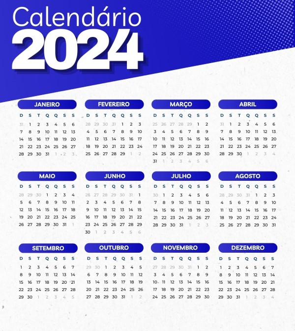
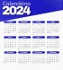

2024: É Ano Bissexto? Desvendando o Calendário
Normalmente, o ano conta com 365 dias, mas, no ano bissexto, é acrescentado mais um dia. Sendo assim, fevereiro, um mês que costuma ter 28 dias, ganha mais um, passando a ter 29 dias.
Leia Mais
Postado em 28/12/2023 13h50
Ano novo 2024 será bissexto: conheça características desse ano
O ano de 2024 traz consigo a curiosidade inerente aos anos bissextos. Descubra a importância histórica e as tradições associadas a esse fenômeno que altera nosso calendário a cada quatro anos.
Por que existe um ano bissexto?
Conforme este artigo, o ano bissexto ocorre para que seja incluído um dia para
aproximar o calendário ao movimento de translação da Terra, tempo que o planeta leva
para dar a volta no Sol, que é de 365 dias, 5 horas, 48 minutos e 46 segundos.
Ainda de acordo com o artigo, essas horas que ultrapassam os 365 dias são
compensadas a cada quatro anos, no dia 29 de fevereiro.
Qual é a história do ano bissexto?
A história do ano bissexto está ligada a uma lenda que dizia que
o primeiro calendário romano tinha sido criado por Rômulo, o fundador de Roma,
contando com 304 dias divididos em 10 meses.
Posteriormente, o sucessor de Rômulo, Numa Pompílio, criou um novo calendário em
que o ano era composto por 355 dias, acrescentando-se dois meses à contagem.
O calendário romano passou a ser luni-solar e teve a adoção de um mês extra,
chamado de mensis intercalaris, a cada dois anos para que houvesse o alinhamento
com o ano solar. No modelo instituído por Numa Pompílio, o ano começava em março e
terminava em fevereiro.
Essas intervenções no calendário foram cruciais para evitar desalinhamentos significativos entre as estações do ano e as datas do calendário. A introdução do ano bissexto, com seu dia adicional a cada quatro anos, é uma solução engenhosa para manter a precisão temporal e garantir que nossas atividades cotidianas e celebrações estejam em harmonia com os ciclos naturais.
Além disso, o conceito do ano bissexto não apenas corrige uma discrepância temporal, mas também destaca a fascinante relação entre a medida do tempo e os eventos astronômicos. Ao longo da história, diversas culturas buscaram métodos para ajustar seus calendários, reconhecendo a importância de sincronizar o tempo humano com os ritmos celestes.
Assim, quando nos deparamos com o 29 de fevereiro a cada quatro anos, podemos apreciar não apenas o acerto matemático do calendário, mas também a complexa interação entre a humanidade e o cosmos, evidenciada por esse simples, porém significativo, dia extra.
Confira nosso Calendario para o ano de 2024!

Downloads

Clique para Baixar
Faça o download do nosso Calendário 2024!
Baixar